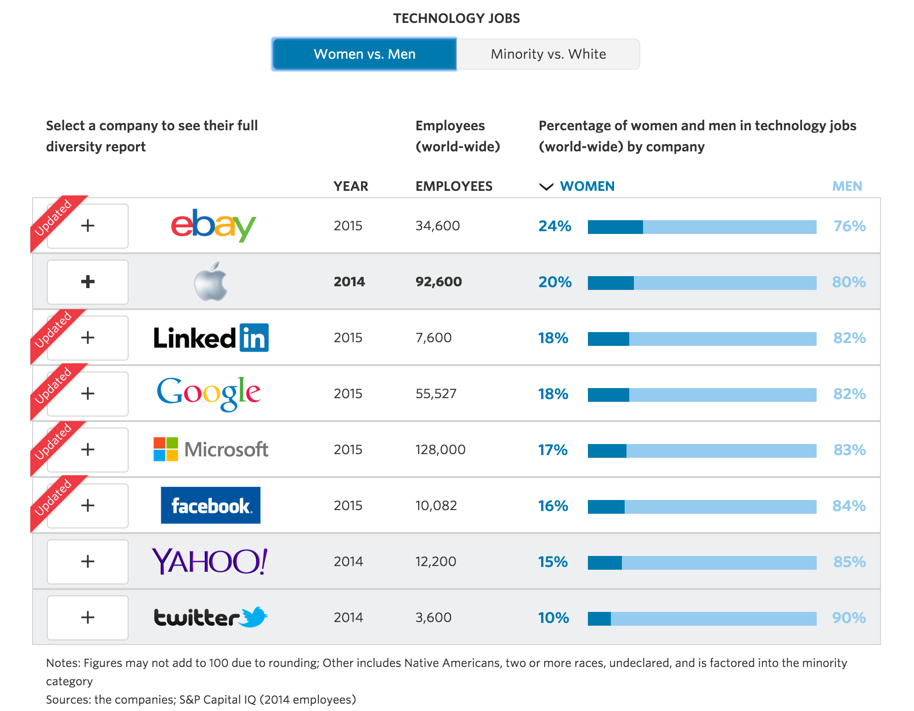

When I applied to college in 2007, the largest race-gender group within the nationwide applicant pool was Caucasian females. Just like me. Awesome. I quickly realized that this was to be the norm. And truly, it was a good thing. Gone were the days that there were so few females actually pursuing education that I got a leg up just for being a women. Then I applied to Dev Bootcamp.
And everything was flipped on its head.
I got a scholarship simply for being female. It was a "diversity scholarship". Never in my life had I ever been considered "diverse". It was hard for me to believe, so naturally I wanted to figure out why. The data I found was staggering. Take a look at the following infographic that The Wall Street Journal published recently.
What I can't get over is that these are eight of the biggest names in tech, the companies who have vowed to improve their levels of female employment, and they still are all less than 25% female. But still, why? As it turns out, there are a variety of factors.
No one has a quick fix for the gender diversity issue plaguing the tech world, but a lot of people are working at it. One of the biggest pushes is to get girls involved early. By sparking an interest and building confidence at a young age, we set them up for success later. Girls Who Code is a nonprofit organization looking to do just that. In the classroom, I saw how easy it was for STEM topics to become "uncool" for girls. Unless we actively work to change that, we're going to see the pendulum continue to swing in the wrong direction.